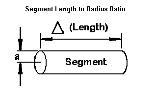
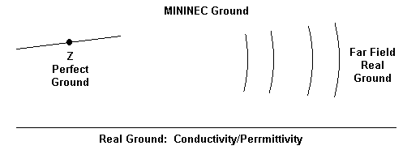
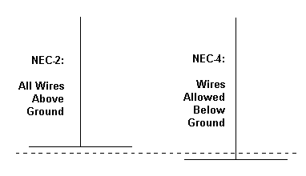
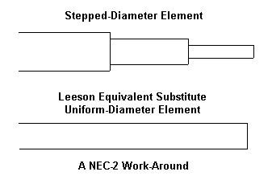
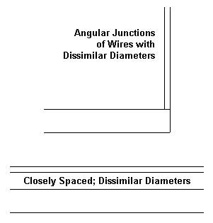

The following notes represent a set of ruminations on the state of development of both NEC and MININEC from their inception to the present. My interest as a user is not in the actual algorithms inside the calculating core, but rather with the efforts that have gone into developing the cores to their fullest potentials for accurate modeling of difficult antenna geometries.
An Initial Limitation

Both NEC and MININEC are wire-modeling programs at root (even though NEC has a surface patch capability). Hence, we likely should except the limitations imposed be a necessary segment-length-to-wire-radius value will ultimately not be eliminated without changing the entire basis of the modeling core. The core uses a thin-wire calculation scheme, and hence, the radius can only be enlarged so far before one exceeds the limits of the thin-wire equations.
This limitation has consequences related to the maximum frequency for which one may model accurately. For a true wire size within the normal range of construction, there will be a frequency frontier or region at which the wire radius increases toward the segment length so that result become untrustworthy. I call this region a frontier because it appears to be dependent upon at least two variables: the wire radius and the complexity of the geometric structure. The more complex the structure, the more segments per wavelength are required to converge results.
Of course, we have a work-around for those willing to do the detailed modeling required. We may use very thin wires and simulate solid wires with a cylindrical wire-grid structures. Under usual modeling conditions, the amount of effort required to create the cylindrical substitute and finding the most reliable means of giving the resulting antenna a source will together make this work-around untenable in practical terms.
Both NEC and MININEC are subject to this initial limitation. Hence, it is likely that there will always be an upper frequency limit--variable though it may be--for both types of cores. Above that limit, other modeling core techniques become dominant.
However, NEC-2 and MININEC 3.13 are both public domain software cores. Hence, both find a place in inexpensive entry-level software. Hence, they are both in very wide use--and that is part of the story.
Other Limitations
When MININEC 3.13 became available out of the work of Rockway and Logan and entered public domain use, it became the core of choice for early DOS-based commercial programs, such as MN by Brian Beezley and ELNEC by Roy Lewallen. When NEC-2, developed largely under the leadership of Jerry Burke at LLNL, finally became public domain (as NEC-3 and NEC-4 supplanted it at LLNL), it entered commercial programs such as NECWires by Beezley and EZNEC by Lewallen. These DOS-based programs eventually took a back seat to Windows-based program, as EZNEC converted to Windows and NSI's NEC-Win Pro and Plus appeared. Windows versions of MININEC began to appear in both free and commercial ware, such as NEC4WIN by Orion and most recently Antenna Model by Terisoft.
Before we assess some of the significance of these progressions of software, let's make a short listing of some of the limitations that each core suffers in its native form.
MININEC 3.13 Limitations

MININEC 3.13 uses a simplified ground system, making use of a reflection coefficient to determine the effects of ground on the far field. However, the reported source impedance is always taken over perfect ground--and that value may or may not be sufficiently accurate for a given modeling task. (In contrast, NEC-2 accesses a Sommerfeld-Norton ground calculation scheme that provides in NEC-2 very accurate result within a few wire radii of the ground. NEC-4, of course, permits buried wires, that is, wire below Z=0.)
MININEC 3.13 has what some call a frequency bias, that is, an error factor that increases with frequency. At VHF and higher, the error is significant. MN provided a correction for this bias. MININEC 3.13 also has a closely-spaced wire problem in its native form. ELNEC provided a corrective for this difficulty. MININEC 3.13 also showed errors when wires met at angle from a right angle down to very small angles. Two routes were generally used to overcome this problem. Since the initial MININEC was limited in the number of total segments that a model might have--a limit removed in Windows versions that usually code in C (however many the following + signs)--one technique was the system of length tapering used in ELNEC. This system ensured that the segment lengths at the angular corner were very short, thus eliminating the clipping effect that results from the use of pulses (at segment junctions) to form the center of current. Core modifications were a second route to overcoming this limitation. Early attempts at corrections have evolved into a rather sophisticated scheme in Antenna Model that produces very accurate results.
NEC-2 does not suffer the angular junction problem until the angles between wires become very small--small enough that the center of the joined wires inter-penetrate. In the most general terms, the middle third of a wire segment is critical to model accuracy, and all junction penetrations should fall outside this area. The thinner the wire and the longer the segment, the narrower the angle may be without incurring model inaccuracies that show up on an average gain test.
MININEC has one more limitation relative to NEC-2/-4: it runs very slowly for a model of a given size relative to the comparable model in NEC. The latest core revisions and Windows programming languages have not yet allowed MININEC to catch up in speed to NEC. Indeed, for very large models, it is not even a race.
Unlike NEC-2 and -4, MININEC 3.13 does not have a "TL" or transmission line facility. This forces one to model all transmission lines as real (potentially radiating) wires, which can become a tedious task for arrays such as a very large and well-populated LPDA. However, the junctions between the thinner phase-line wires and the fatter element wires presents no problems--as they would for NEC-2 and -4.
We should note in passing that Rockway and Logan have moved on to a complete revision of MININEC to overcome a number of the limitations of 3.13. The result is a sequence of programs called generally "Expert MININEC." Since the programs are proprietary and have considerable cost for versions that permit a high segment count, I do not have a current version and hence must exclude these developments from consideration here. However, a relatively full description of the program foundations has been available at the EM Scientific (web.archive.org) web site.
NEC-2 Limitations
NEC-2 (and -4) place the center of current in the mid-segment region and thus are subject to limitations quite unlike those of MININEC 3.13. The original programming is in Fortran, which has seen a number of run-speed improvements as those implementing the core make use of the latest compilers. With the increase in computer speed and RAM size as adjuncts to these speed improvements, the need for using the fast or reflection- coefficient ground calculation system has largely passed, and the S-N ground system is generally recommended for all antenna models requiring placement over ground. As well NEC calculates the source impedance of a model over the actual ground specified in the model, whichever type of ground that the user selects.
There are two ways to look at NEC-2 limitations. One is by way of comparison with what MININEC 3.13 does well. The other is by way of comparison with what NEC-4 does better. To be fair, we shall have to make both types of comparisons.

The primary example of a comparison between NEC-2 and NEC-4 is perhaps the ability of the latter version to handle wires placed below ground. Although numerous modelers have tried to determine vertical monopole performance by placing NEC-2 ground radials very close to the ground, modeling the same structures in NEC-4 with buried radials have shown these approximations to be very limited.
NEC-4 also offers a few possibilities included in neither MININEC 3.13 nor NEC-2. An obvious example is the NEC-4 control card IS, that allows the user to evaluate wires having insulated sheathes with user-specifiable thicknesses, conductivities, and dielectric constants.
NEC-4 improvements over NEC-2 range from the well-advertised to the relatively unknown. In the latter group belongs an emergent frequency offset between NEC-2 and NEC-4 as one goes into and through the UHF range. In general, NEC-4 is considered more accurate in this regard. It also appears that NEC-4 handles tight angles between joined wires, especially in radial sets and similar structures, somewhat better than NEC-2.

The most widely advertised improvement in NEC-4 is the ability to handle with reasonable accuracy antenna elements composed of stepped-diameter model wires, a common feature of upper HF arrays. NEC-2 models of such elements are wholly unreliable. There emerged some schemes for overcoming this limitation. The one used in both EZNEC and NEC-Win Plus involves the Leeson corrections. Essentially, the program calculates a uniform-diameter element of the correct length and diameter to serve as a substitute for the stepped-diameter element. The calculations have restrictions, for example, the requirements that the element be symmetrical (if not a monopole touching the ground) and that all sources and loads be at the element center (or monopole base). Since these restrictions are no problem for Yagi, LPDA, and similar upper HF elements, the substitute uniform-diameter work-around has performed very successfully.
However, even the work-around has limitations. There will be a difference in the reported NEC-2 output for such an element with uniform segmentation vs. one with highly variable segmentation, especially if the segment lengths differ close to the source.
NEC-4 requires no substitute elements, as it handles stepped-diameter directly. However, the core does not yield identical results with those of substitute uniform-diameter elements, and the more radical the stepping of the original elements, the further NEC-4 results depart from those obtained by Leeson substitutes. In contrast, Leeson substitute elements correlate very precisely with the native stepped-diameter element directly handled by MININEC. MININEC 3.13 does not suffer the large limitation of NEC-2 and the smaller one of NEC-4, and hence yields accurate results without correction factors (other than those notes earlier for frequency and the like).

Related to the stepped-diameter element limitation is another: NEC yields erroneous result when there are junctions of wires having dissimilar radii. As one might expect, the difficulty is worse in NEC-2 than in NEC-4. However, a well-corrected MININEC program produces more accurate results in such cases than even NEC-4.
Both NEC-2 and -4 require for greatest accuracy that closely spaced wires have the best possible segment-junction alignment. However, even adhering to this condition yields erroneous results if the wires--even though not touching--have dissimilar diameters and the error increases as the wires are brought closer to each other. The degree of divergence from accuracy tends to show clearly in average gain tests. Once more, a well-corrected MININEC 3.13 does not share this difficulty. However, note the qualification that the MININEC core must be well-corrected. With suitable correction, MININEC will show poor accuracy with closely spaced wires of any diameter, including standard folded dipoles.
NEC-2 and -4 do have a TL or transmission line facility which enables the user to construct non-radiating lines of virtually any characteristic impedance and length. However, despite having been around since at least the early 1980s, the TL facility remains restricted to lossless lines, with no way of handling real lossy lines. At the same time, constructing real-wire simulations of transmission lines to account for losses in them falls prey either to NEC's difficulty with very closely spaced wires or to its inability (without massive and mostly impractical wire-grid constructs) to handle concentric coaxial cables. Only NEC-4 would be able to handle the dielectric within a coaxial cable, if one tried to create such a cable as a wire-grid structure.
Some Common Limitations
Both NEC and MININEC permit the user to place resistance-reactance or resistance-inductance-capacitance loads on a modeled wire. In both cases, the loads are non-radiating or, in other terms, mathematical only. As such, they are, like transmission lines, most accurate when placed at current maximums, where the current at both ends of the loaded segment is roughly equal. Placed away from these positions, the current at one end of the load differs from the current at the other end, and the load less accurately reflects the performance of a real component. An inductor, for example, performs as almost solely an inductor only so far as the current at each end is equal. Any differential will show up in the form of the wire acting partly as a length of the antenna wire. The non-radiating loads of modeling programs cannot show this non-inductive activity of a load placed on a wire in a region of significantly changing current level.
MININEC 3.13 has another limitation in its native form. It permits load and source placement only at the wire ends or at the center. Some implementations of MININEC, such as ELNEC, have overcome this limit, while others have not. Although the models--by judicious subdivision of an element into separate wires--can overcome the limitation, its persistence does complicate modeling.
As we have noted, of the cores under consideration, only NEC-4 permits the use of wires lower than Z=0. For a perfect ground, a monopole just touching ground will yield virtually identical results in both MININEC 3.13 and NEC-2. However, if we assign the ground values of conductivity and relative dielectric constant (permittivity), we obtain considerably different results. In general, NEC-2 results are without merit. MININEC 3.13 results are usable, but with limitations that have not been appreciated until comparisons were made between those results and the outputs obtained in NEC-4 with buried radial fields of various sizes. The resulting correlations were spotty at best. The usefulness of the MININEC ground had been sufficiently superior to use of either form of NEC-2 ground to encourage EZNEC to provide that ground system as an addition to the ones within the NEC-2 core.
However, in the end, the adequacy of using a MININEC ground with vertical monopoles and variants depends in large part on the degree of accuracy required by the modeling task. There is a vast difference in the demands placed on a modeling system when we desire precision from those we impose when we are looking a general trends. As well, the MININEC system has been misused in the analysis of monopole arrays where one or more of the elements is sloping. Any horizontal component to the radiation of the element, when the elements is in whole or part less than 0.2 wavelengths above ground will result in errors. Still, the results may be only as erroneous as those produced on a simulated buried field in NEC-2 that is composed of wires close to ground--assuming that a buried radial field is the actuality to be modeled.
I am Surprised. . .
The sum of this incomplete review of MININEC 3.13 and NEC limitations is not what one might initially expect. The point is not at all to compare the two core types in an effort to assess superiority. As previous columns have suggested, which core is superior depends to a very great extent on the parameters of the modeling task.
Rather, my ruminations on the limitations of the cores bear an element of surprise that more has not been done in certain directions of potential development.
1. MININEC 3.13: The MININEC core lacks three things achieved by NEC-2: speed of run-time, the presence of the S-N ground calculation system, and the presence of the TL facility. In terms of the user's encounter with the best of current MININEC 3.13 implementations, these shortcomings are the most pronounced. I cannot say what the future may hold for speeding up MININEC runs and for adding the two facilities to the programs available to the user. However, having noted these hoped-for developments, let's turn to the other side of the coin.
Since its release as a public domain program, MININEC 3.13 has been under continuous development by a number of individuals. Corrections have emerged for most of the geometry-related and frequency-related aspects of core performance. As well, initial segmentation limits have disappeared in Windows implementations of the cores so that now computer memory is the chief limiting factor in model size.
While user interfaces have emerged to ease both the input side of modeling and to make the output side more readable and interesting, the bottom line remains this one: the core itself has undergone considerable evolution in the decades since it became public domain.
2. NEC-2: NEC-2 is no less a public domain core than is MININEC 3.13. The code is readily available. Indeed, there have been a few core modifications to customize it for use with various interfaces, if for no other purpose than to set the maximum limit on the number of allowable segments in a model.
However, most of the major work of commercial developers has been in the region of the input and output interfaces. Input systems have become sophisticated, even to allowing modeling by equation in NEC-Win Plus or modeling in MathCAD, as in SuperNEC. Model viewing--with accessible geometry data--is commonplace, and modeling with a reliable transfer from a graphic to a wires table is not far off. Output tables and graphics have grown more numerous and content-rich, and the NEC outputs gradually become more easily accessed and transferred to a medium of preference.
However, the NEC-2 core has remained relatively inviolate. For example, EZNEC permits the specification of TL physical lengths and velocity factors. However, what enters the core is a pre-calculation of the electrical length. The core remains as is. Similarly for EZNEC and NEC- Win Plus Leeson corrections. The core uses the substitute element, but has not been altered internally to better handle stepped-diameter elements.
NEC-4 has emerged as the best of NEC, but even it has limitations, such as those suggested earlier. Although it is proprietary, its remaining limitations seem significant enough to encourage developers to work with the public domain NEC-2 core to yield a core that is as accurate as MININEC is in the regions where its accuracy is both known and high. Curiously, such developments have either not occurred or not been made public--even in the form of an improved commercial implementation of NEC- 2. Improved versions of NEC-2 either rest on improved run times or upon improved user interface facilities.
I do not know if the existence of NEC-4--however proprietary it may remain--discourages wrestling with NEC-2 to improve it. Likely such development would have only limited commercial attractiveness within the U.S., where NEC-4 is readily available to those who can pay for both the license and the software. However, since NEC-4 still has export restrictions, refinement of the NEC-2 core seems to be a task that might appeal to developers outside the U.S.
It may well be that many of those who might be capable of undertaking the further development of NEC cores are awaiting a NEC-5. There have been hints from time to time of emergent cores using the method of moments in conjunction with a different set of algorithms.
So the state of the art is that NEC users either work with a 20-year old core having severe limitations or that they qualify to work with a decade-old core that is not limitation-free. MININEC 3.13 users face equal limitations in the absence of certain features that NEC users enjoy, despite continuous and intensive development efforts over the years.
Little wonder that I am surprised.
Also see Antenna Modeling Programs page for more informationon.